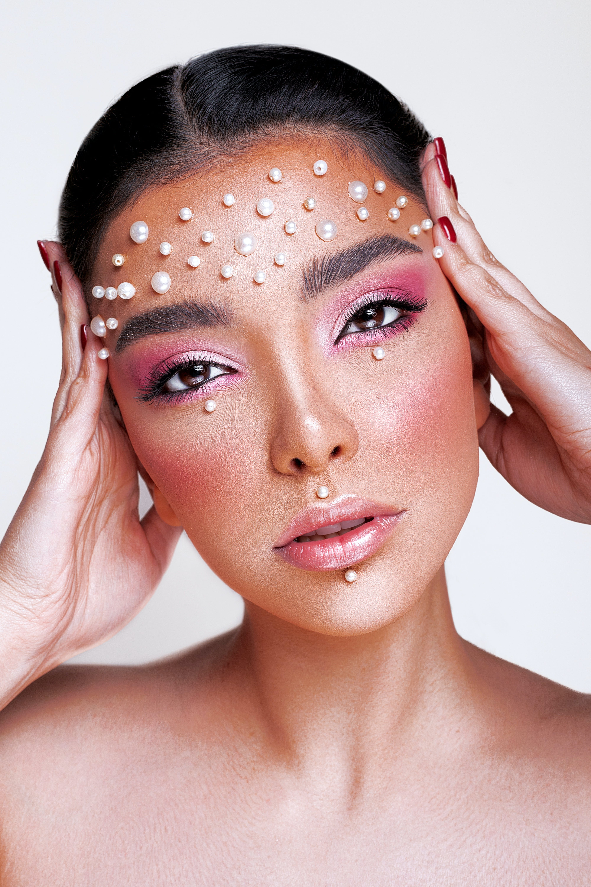

Terugkerende trends in de mode.

Denim op denim is weer helemaal terug in de mode.
Ook de broek met wijde pijpen is weer helemaal terug.

De laatste modetrends.

Afrobeats
Afrobeats is een muziekgenre dat voor opschudding zorgt in de mode.

Make-up
Make-up en mode zijn onlosmakelijk met elkaar verbonden in de wereld van schoonheid en persoonlijke stijl.
."De modeweek is een must-see om alle ontwerpers, modellen en tijdschriften te eren. De Grote 4 zijn: Parijs, Milaan, Londen en New York."
-Fashion Pi.